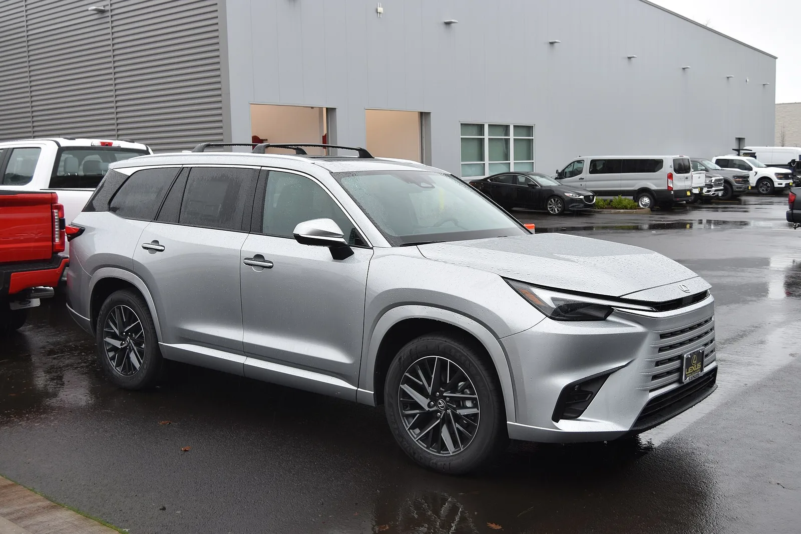
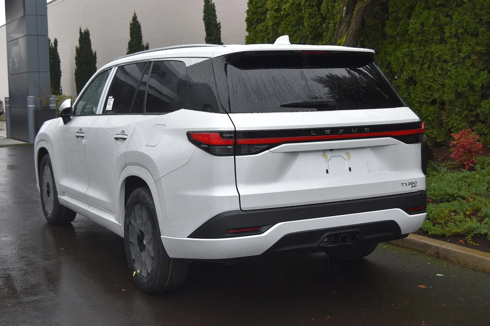

▲ 렉서스의 3열 SUV는 국내 라인업에 비어 있는 자리다 ⓒ Wikimedia Commons
렉서스에는 3열 SUV가 있습니다. TX입니다.
다만 북미 전용입니다. 국내 출시 가능성은 거의 없다고 봐야 합니다.
대신 다른 차가 준비되고 있습니다. 2026년 5월 7일 공개된 TZ입니다. 렉서스 최초의 3열 순수전기 AWD SUV입니다.
1. 국내 렉서스에 3열이 없다
| 모델 | 좌석 | 국내 |
|---|---|---|
| UX | 2열 | 판매 |
| NX | 2열 | 판매 |
| RX | 2열 | 판매 |
| RZ | 2열 | 판매 (순수 전기) |
| TX | 3열 | 북미 전용 |
| TZ | 3열 | 2026년 공개 — 국내 미정 |
국내에서 살 수 있는 렉서스 SUV는 전부 2열입니다.
이건 라인업 공백입니다. 국내 프리미엄 SUV 시장에서 3열은 작은 시장이 아닙니다. 팰리세이드와 GV80이 그 자리를 차지하고 있고, 카니발도 같은 수요를 나눕니다.
2. TX가 북미 전용인 이유
| 요인 | 내용 |
|---|---|
| 차체 크기 | TX 전장 5,150mm — 국내 일반 주차면 길이 5.0m를 넘는다 |
| 파워트레인 | TX350·500h는 2.4L 터보 — 자동차세는 오히려 불리하지 않다 |
| 생산 | 북미 현지 생산 — 다른 시장으로 보내면 물류·관세가 붙는다 |
| 수요 | 일본·유럽에서 대형 3열 SUV 수요가 작다 |
여기서 흔한 오해를 하나 짚고 갑니다. 미국 대형 SUV가 국내에 안 들어오는 이유로 배기량 기준 자동차세가 자주 지목되지만, TX에는 해당하지 않습니다.
주력인 TX350과 TX500h는 모두 2.4L 터보(T24A-FTS) 4기통입니다. 3.5L V6는 최상위 플러그인 하이브리드 TX550h+에만 들어갑니다. 2,400cc면 국내 자동차세는 연 62만4,000원 수준으로, 대형 SUV치고는 오히려 가벼운 편입니다.
진짜 걸림돌은 차체와 생산지입니다. 전장 5,150mm는 국내 일반 주차면 길이 5.0m를 넘어섭니다. 여기에 미국 인디애나 공장에서만 만들고, 국내에는 이미 렉서스 3열 수요를 받아낼 유통망이 갖춰지지 않았습니다.
앞서 다룬 쉐보레 타호와 같은 구조적 이유입니다. 미국 시장에 최적화된 대형 SUV는 국내에서 세금·주차·연비가 동시에 불리해집니다.

▲ 국내에서 살 수 있는 렉서스 SUV는 전부 2열이다

▲ TX 350. 전장 5,150mm로 국내 일반 주차면 길이 5.0m를 넘어선다 ⓒ Wikimedia Commons
3. TZ라는 대안
| 항목 | 내용 |
|---|---|
| 성격 | 렉서스 최초 3열 순수전기 AWD SUV |
| 공개 | 2026년 5월 7일 |
| 생산 | 2026년부터 |
| 체급 | 준대형 전기 SUV |
| 국내 출시 | 미정 |
TZ가 TX보다 국내 도입 가능성이 높은 이유는 파워트레인입니다.
| 항목 | 내연기관(TX) | 전기(TZ) |
|---|---|---|
| 자동차세 | 배기량 기준 — 불리 | 정액 — 유리 |
| 보조금 | 없다 | 가격 구간에 따라 가능 |
| 실내 공간 | 엔진·변속기 공간 필요 | 평평한 바닥 — 3열에 유리 |
| 충전 | — | 인프라 의존 |
세 번째 항목이 3열 SUV에서 특히 큽니다. 전기차는 엔진과 변속기, 구동축이 차지하던 공간이 없습니다. 같은 전장에서 3열 거주성이 좋아집니다.
다만 무게가 늘어납니다. 3열 대형 SUV에 큰 배터리를 얹으면 3톤에 가까워집니다. 앞서 다룬 GV90이 공차 3톤을 넘긴 것과 같은 구조입니다.

▲ TX 350 AWD 후면. 3열 뒤로도 적재공간이 남는 길이가 북미 시장의 요구다 ⓒ Wikimedia Commons
4. 국내 3열 프리미엄 시장의 구도
| 구분 | 모델 | 성격 |
|---|---|---|
| 국산 SUV | 팰리세이드 | 볼륨 모델 |
| 국산 프리미엄 | GV80 | 제네시스 주력 |
| 미니밴 | 카니발 | 3열 거주성 최상 |
| 수입 | BMW X7, 벤츠 GLS, 볼보 XC90 등 | 고가 |
| 렉서스 | 없음 | — |
국내에서 3열 SUV와 미니밴이 같은 수요를 나눈다는 점이 미국과 다릅니다. 미국에서 미니밴은 회피 대상이지만, 국내에서 카니발은 성공적인 패밀리카입니다.
이것이 렉서스가 국내에 3열 SUV를 서둘러 넣지 않은 이유일 수 있습니다. 시장이 이미 카니발과 팰리세이드로 채워져 있고, 수입 3열은 X7·GLS 같은 고가 영역에 몰려 있습니다.

▲ 국내 3열 수요는 팰리세이드·GV80·카니발이 나눠 갖고 있다
5. 언제 달라질 수 있나
| 조건 | 내용 |
|---|---|
| 가솔린 단종 | 렉서스가 순수 가솔린을 지우면 전동화 모델 확대가 불가피 |
| TZ 생산 안정화 | 2026년 생산 시작 — 초기 물량은 주요 시장 우선 |
| 국내 3열 전기 SUV 수요 | 아이오닉 9, EV9 등이 시장을 여는 중 |
| 보조금 정책 | 고가 전기차의 보조금 조건 |
세 번째 항목이 실질적입니다. 국내에서 3열 전기 SUV라는 장르는 아이오닉 9과 EV9이 먼저 열었습니다. 수요가 확인되면 수입 브랜드도 따라 들어올 명분이 생깁니다.

▲ 렉서스가 순수 가솔린을 지우면 전동화 모델 확대가 불가피해진다
6. 정리
렉서스 3열 SUV인 TX는 북미 시장 전용이라 국내 출시 가능성이 거의 없습니다.
대신 렉서스 최초의 3열 순수전기 AWD SUV인 TZ가 2026년 5월 7일 공개됐고 2026년부터 생산될 예정입니다. 국내 출시는 미정입니다.
국내 렉서스 SUV는 UX·NX·RX·RZ 전부 2열이라 3열 자리가 비어 있습니다. 그 수요는 팰리세이드·GV80·카니발이 나눠 갖고 있으며, 렉서스가 순수 가솔린을 순차 단종하는 흐름에서 TZ가 갖는 의미가 커지고 있습니다.